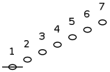
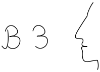

Беседа 3486 от 3877 · Беинса Дуно
Нов живот на пеперуда
„Добрата молитва“
„Красив е животът“
Човешкият живот зависи от Божиите блага, които ни са дадени. Има проводници, през които идат благата. Човек не само трябва да върви по един път. Да кажем, имате теория по музиката, знаете само да изпеете гамата, 7-те тона. Какво могат да ви помогнат 7-те тона? Ако знаете тия тонове как да ги съчетавате, ще се ползувате. Вие се оплаквате от съдбата. Един добър певец или един добър свирец като знае как да съчетава тоновете, като вземе инструмента този музикант или като уповава на своя глас, за една вечер му дават 25 000 лева. Сега не е въпросът само за материалните работи, но всякога човек трябва да се стреми към известни придобивки. Ако не придобива, той губи.

Тогава да ви разкажа една малка приказка, как дошъл на Земята белият цвят. Преди да бъде създадена Земята, това било малко цвете, било в Божествената градина. Щом разказали, че Господ направил Небето и Земята и мислил да я устрои, решило това малко цвете да дойде на Земята. Дошло на Слънцето и по пътя на светлината дошло на Земята. Като дошло, таман чуло гласа на Господа, Който казал: [в] земята да порасте всичко, всички треви и цветя. И то взело участие в туй, че го посадили в планината. Казва: „Там Земята ми стана майка и Слънцето – баща, въздухът ми стана брат, а водата ми стана сестра.“ Започнало да разправя как този брат го занимавал, как му пял, как водата и тя му пяла, чистила му краката, всяка сутрин майката приготовлявала храна, всяка сутрин бащата идел да го поздравлява и то чувало неговия глас.
Ако въздухът не е ваш брат, ако водата не е ваша сестра, ако Земята не е ваша майка и ако Слънцето не ви е баща, вие не може да растете. Ако вземете в буквален смисъл Слънцето да е баща… Има едно слънце, което е баща. Сега говоря на вас, които разбирате. Човек, който яде нещо, разбира, може да му се говори! Онзи, на когото устата е затворена, не може да говори. Онзи, който има очи и вижда, може да му се говори; но онзи, на когото очите му са затворени и не вижда светлината, безпредметно е да му се говори.
Казвам: Във вас има много чувства, много способности, много сили имате и от много вие сте се обременили. Всички страдате, защо? От голям товар. За пример, ако давате някому храна и той няма зъби, зъбите паднали, не може да дъвче, какво ще го ползува храната? Два вида страдания има. Някой път гледаш яденето, но не ти го дават и страдаш. Казваш: „Нямам ядене.“ Някой път ви дадат ядене, но вие го нагълтате, не го сдъвчете. Най-първо страданието беше отвън, казваш: „Да ми се даде това ядене“, страдаш – не ти го дават. Дадат ти го, не си сдъвкал добре – започнеш да страдаш. Докато храната отвън не ти дават, страдаш по един начин, като приемеш несдъвкана храната, страдаш по друг начин. Знанието, което не е сдъвкано, причинява големи страдания. Някой казва: „Да имам знание.“ Отвън ще се мъчиш, като го нямаш; но отвътре като дойде знанието, пак ще се мъчиш.
Допуснете, че вас ви викат в България да оправите България. Кой ще бъде първият ваш проект? Казваш: „България може да се оправи.“ Вие може да дадете такъв проект. Как може да се оправи един дом? Казвате: къща трябва да се съгради; после, зимно време в тази къща трябва да гори огън; и после, жителите в тази къща трябва да имат храна. Казваш: „Да имат къща“, но как ще съградиш къщата? „Да имат огън“ – но как ще запалиш огъня? Имате брашно – трябва да знаете как да го замесите. Сега вие сте се спрели само на теоретическата страна. Казвате: „Да имаме, да дойде Духът в мене, умът ми да започне да работи.“ Умът постоянно работи. Не е било време, когато човешкият ум да не е работил. Преди вие да бяхте на Земята, човешкият ум работеше и след като замине човек от Земята, човешкият ум ще работи. Ние от човешко гледище мислим, че умът не работи. За нас не работи.
Та, сега трябва да се тури, както в една фабрика, един ремък на вашето колело и да вземете участие в общата работа. Трябва да започнем сега от елементарни работи. Кое е елементарното нещо на майката? – Да знае какво да даде. Кое е елементарното нещо на детето? – Да знае какво да вземе. Като се роди едно дете и искате да знаете какво ще излезе, още като проходи, ако искате да знаете какво ще излезе от него, турете перо, турете му една сабя, турете му пари, турете му книги и вижте какво ще пипне. Което пипне първо, такъв ще стане. Или турете му една кадилница с тамян, ако я пипне, поп ще стане. То е само за изяснение.
Казвам: Онова, което най-първо привлича живота на нашия ум, към него се стремим. Привлича те тебе червената светлина – то е животът. Привлича те портокалената светлина – това е индивидуализирането на човека. Привлича те зеленият цвят – ти обичаш париците. Привлича те жълтият цвят – ти обичаш знанието. Привлича те синият цвят – ти обичаш вярата, надеждата. Или виолетовият цвят те привлича – ти искаш да заповядваш в света. Щом обичаш виолетовия цвят, ти обичаш да заповядваш. Ти искаш в училището да учиш – наблюдавай, ако учителят носи люляков цвят и ти си много честолюбив, в туй училище не ходи, защото той обича да заповядва, пък ти си честолюбив. Ако учителят ходи в градината, наблюдавай при кои цветя се спира. Ако се спре при жълтите цветя, иди при него. Виж кои цветя. После за себе си виж – кое те привлича в света. Ако ти турят една торба със злато, жълтият цвят ще излезе навън, няма ли да се приближите? Кой как мине, ще си вземе за спомен. Като се върна, всичките плодове влезли в джобовете. Една вода като мине през градината, не е лошо, че е минала, но да полее градината, че от тази градина да излезе плод. Всички наши мисли, всички наши желания трябва да произведат нещо. Ако една мисъл влезе и седи в статическо положение в човека, тя е товар. Ако едно желание влезе и не се реализира, то е товар. Ако една постъпка влезе и не се приложи, тя е товар.
Сега, това са елементарни работи. Казвате: Ние го знаем това. Я ми изпейте тона до на червения цвят, изпейте ми до на портокаления цвят, изпейте ми до на зеления цвят, изпейте ми до на жълтия цвят, на синия цвят. Мнозина говорят за музика. Лесно се говори. Трябва да знаеш, трябва да има някой да те научи. Бог създаде света, Той е създател и Учител, да учат хората. Целият свят, в който живеете, трябва да учите. Сега се занимавате с хората, кой е добър и кой – лош. Какво значи човек да бъде добър? Лошият извади сабята. Щом се противиш, с ножа той разрешава. А пък добрият какво избира? Добрият избира житото и ходи да го сажда. Онзи, който носи сабята, ако житото го няма, в ръката ще може ли да държи сабята? Силен е в ръцете, но житото му дава сила. Казва: „Да имам сабя, всичко ще направя.“ Хубаво, ако нямаш хляб, какво ще направиш? Даже и силният, ако няма хляб, и той не може да тури своята наука.
Това сега трябва да приложите в живота, да видите какво може да направите. Най-първо, отучете се да съдите. Вие сега се съдите. Единч овек, за да се съди, трябва да бъде много учен. Вие сега казвате: „Аз не съм добър човек“ или за друг казвате, че е добър. На какво основание казвате, че сте лош човек? Ако дойде един хирург, имате един тумор или цирей, който по никой начин не узрява, не може [ли] да се разреже, да се освободи човек? Казва: „Много страдания ми причини.“ Причини ви човекът много страдания, но ви причини и добро. Даже най-хубавото ядене, ако не знаете как да го ядете, ще ви причини вреда. Този човек, който ви дава яденето, може да е имал най-доброто желание, но вие, ако вие не знаете да ядете, ще ви причини страдание. Ние живеем в един свят и благословенията, които Бог ни е дал, не ги употребяваме и така се намираме в едно противоречие.
Сега да допуснем, че вие искате да бъдете богат. Вашата идея за богатството каква е? Вие искате да бъдете богат, но с пари може ли да бъдеш богат? До каква идея сте дошли, с какво число може да бъде вашето богатство? Музикантът, за да бъде музикант, най-първо му трябват 7 тона, 7 числа му трябват. Той не може да бъде богат с малко. Някой казва: „Да имам 1000 лева, да имам 2000 лева…“ Какво ще направиш с 2000 лева? „Да имам 3, 4, 5, 6, 7000 лева…“ Може да са 7000 звонкови турски лири или английски лири, злато. 7000 лири колко струват? Ако са 7000 диаманта като кокоши яйца? Да кажем, трябва ви един диамант. Най-малко ви трябват 5 диаманта, 5 сетива имате – по един за всяко сетиво. За ръцете – един диамант, за устата – втори диамант, за носа – трети, за ушите ви трябва един диамант, за очите ви трябва диамант, и то голям, не такива малки, не като лешник, но като големи орехи.
Това са сега пояснения. На коя ваша дарба вие разполагате най-вече? Казва: да обичате някого. Знаеш каква беля може да си навлечеш с любовта. Най-голямото благо може да постигнеш, но и най-големите злини ще постигнеш с любовта. Да допуснем, ти си естественик, намериш едно яйце на някоя боа, не знаеш какво е. Виждаш туй яйце интересно, вземеш го и му даваш условия да се излюпи. Най-първо го виждаш малко, но после стане една голяма змия, земчуга, 6–7 метра дълга, тежи 300 килограма. Питам: като измътиш това яйце, тази земчуга иска ядене. Ако не знаеш да я храниш, ще погълне тебе.
Сега всички говорите за любовта. Ти в любовта трябва да знаеш какво да избираш. Вие искате много да знаете, но и в знанието има такива яйца на някоя боа. Да кажем, дойде ти идеята: има ли Господ или няма. То е змийско яйце. „Няма Го Господа.“ Щом Го няма, ти удариш нашироко. Ако има Господ, ти от страх ще живееш добре. Щом Го няма, тогава ти караш както искаш. Ти нямаш идея за Бога. Господ и да го няма, пак живей добре. Какво значи „няма Господ“? Господ като създаде човека, отдалечи се от него, за да не му препятствува. Той не иска като някой орел да седи, оставя го свободен, за да може да се развива, отдалече поглежда. Че Го няма в тебе, че е надалече, то е друг въпрос.
Та, казвам: И в безверието Господ е там. Само, в безверието Господ е много далече, във вярата Господ е много близо. Ти си добил знанието, Господ иска да те изпита. В безверието Той ти предал урока и във вярата ще те изпитва. Та мене щом ми кажат, че някой [е] безверник, казвам: предават му урока. Щом казва, че е вярващ, идват да го изпитват. Какво противоречие има? Казват: „Намерил Господа.“ Казвам: Предали са му урока. Предал учителят урока и си заминал от класа. Иде да те изпитва, иде в класа. Няма го учителят в класа, учениците дигат шум колкото искат. Щом кажат, че учителят иде, всички са по местата си мирно. Като влезе учителят, ще каже, че тия ученици са много мирни. При учителя са мирни; щом излезе учителят, никак не са мирни.
Преди години в Търново бях на едно лозе. Изучавах един дълбок въпрос в природата. Наблизо бяха се насъбрали хиляди врабчета и те искат да ми помогнат, но като ми помагат, дигат шум. Трябваше да ходя да ги гоня, но аз седнах да мисля, а те чуруликат. По някой път се спирах и ги гледах, разправят се нещо. Един ден гледам, всички млъкнаха, като че ги пресекна нещо. Да хвръкнаха – не са. Какво стана с тях? Всички млъкнаха, тъй че се заинтересувах. Отивам и гледам, един сокол кацнал насреща им и всички го гледат, те хиляди се наредили. Казвам: „Какво правите?“ Всичките мълчат. Никое не се мърда. Казвам: да имам фотография, да ги фотографирам, какво почитание, какво уважение! Казват: „Учителю, каквото кажеш, ще го направим.“ Всички се наврели навътре, по-далеч да са от учителя. Той седи и ги гледа. Аз му виждам целта. Той иска най-способният ученик да го изкара на изпит. Те всичките не знаят и се оттеглили навътре. Седя, гледа ги, гледа ги около 5 минути и най-после казва: „Няма способни ученици за изпитване“ и си хвръкна. Като хвръкна, веднага се чу пак чуруликане. Отиде си учителят. Аз виждам една философия. Аз не мога да заставя тия птиченца така да седят, той ги заставя, всичките кротуват, не се мърдат. Аз не мога да ги заставя така мирно да седят. Туй, което соколът има, на мене ми трябват може би 20 години, за да го направя.
Сега ще ви приведа друг пример. Среща д-р Бъкли един писател, който издава един вестник в Америка, един свой приятел. Казва: „Къде си ходил?“ Срещат се в Чикаго. Казва: „Ходих да гледам как един заповядва на бълхите да маршируват, дефилират като войници на полкове, на роти, на взводове.“ Казва му: „Остави се, какво ме занимаваш, аз, д-р Бъкли, на мене ще ми разправяш, че заповядвал някой на бълхите, как ще дефилират като войници?“ – „Ела – казва – да видиш.“ Отиват – в една плоскост под стъкло наредени може би повече от 10 000 бълхи, всички наредени на взводове и като им говори, всички тия бълхи като войници вървят под стъклото. Онзи им заповядва, пък те маршируват. Онзи, който им заповядва, казва: „То е дарба, носим го ние в нашия род. Най-голямата мъчнотия, която срещаме при бълхите, [е] докато ги научим да маршируват и докато ги отучим да скачат.“ Ще я турят между две стъкла, да я отучат да скача. Щом я отучат да скача, може да я научат като войник да дефилира. Щом скача, туй изкуство не може да го научи. Та, казвам: Ако бълхите могат да се научат като войници, ние какво ще кажем. Ние ще кажем ли, че не можем да направим нещо в света, което е невъзможно?
Та, има хора, които, като идат при един кошер, имат силата да изкарат всичките пчели вън от кошера да излязат и да [накацат] по него, като че ли е царица и после пак да се върнат в кошера – той им заповядва. Ако човек не знае законите на своята мисъл, какво му липсва… Сега ние това учим. Не е лесна работа човек да се справи с една своя мисъл. Нещо неуловимо е, не е нещо, което механически може да се хване. Казва някой: да бъдем господари на своята мисъл. Упражнявали ли сте [се], да видите как човек може да бъде господар на своята мисъл? Направете опит само една минута да държите една мисъл в ума си, да видите колко е мъчно.
Отива в Индия един индуски ученик при един виден индуски учител, да му разправи нещо за любовта. Казва му учителят: „10 дена за всичко може да мислиш, но само за носорога няма да мислиш, няма да го допущаш в ума си.“ Връща се ученикът след 10 дена и казва: „За нищо друго не мислех, освен за носорога. През всичкото време носорогът седи в ума ми.“ Не е ли същото противоречие, че Адам и Ева не мислеха за нищо друго, но за забраненото дърво? Същият закон е: „От всичките дървета може да ядете, само от дървото на познание [на] доброто и злото няма да ядете.“ Като им каза, мина доста време. Мине Адам, погледне дървото и си помисли: „Хубаво е да се похапне.“ Мине Ева, погледне, и тя си помисли: „Хубаво е да се похапне.“ Минаваха, заминаваха, оживя вече. Като мина Ева веднъж, там беше онзи учител и каза: „Туй е дървото. От това дърво ако ядете, хора ще станете.“
Сега вие казвате: „Какво да правим вече?“ Какво иска природата от вас, вие как схващате? Вие казвате: „Да се уреди животът.“ Че как ще го уредим? Както ние го уреждаме, ще го уредим. Как го уреждат големите държави като Америка и Япония, как го уреждат? (Преди един ден си обявиха война.) (Войната между Япония и САЩ започва на 7 декември 1941 г. с японското нападение над американската база Пърл Харбър.) Музикално го уреждат – свирят всичките ноти. Има такива ноти голямокалибрени, и половини има, и четвъртини има, и осмини, и шестнайсетини, и трийсет-и-вторини, и шейсет-и-четвъртини има. Една бомба като се пукне на такива малки парчета, на по-малки ноти, като те засегне едно от тия малки парчета, от тази музика напише се нотата вече и ти я носиш със себе си.
По някой път вие питате защо се бият хората. Че какво трябва да правят? Ти като ядеш, защо ядеш, не може ли без да ядеш? Ти като приемаш храната, защо не я глътнеш цяла? Като вземеш едно парченце, най-първо си много любезен към храната, казваш ѝ: „Не бой се.“ Ти ѝ разправяш, че ще бъде царски приета. Но щом влезе вътре в устата, ти пак ѝ разправяш, че ще ѝ снемеш дрехата и ще я пратиш в апартамента долу. Като ѝ снемеш дрехата, тя влезе в апартамента, там ще има друго джуруликане. Там пак ѝ снимаш дрехата и я пратиш в дробовете. Там ще има друго джуруликане, известна течност ще има, ще дойде горенето, изпращаш после в мозъка. Ако някой път попитате тази храна, която е минала през човека, дали ще иска пак да мине, тя ще каже, че втори път не минава. Казва: „Който не е опитал, да минава.“ Един американец веднъж се спуснал от ниагарския водопад в една бъчва, че като го извадили, казва: „Да ми дадат и целия свят, не влизам втори път в бъчвата.“ Водата го е джуруликала така.
Начинът, по който ние ядем, е елементарен. Когато се усъвършенствуваме, ще стане подобрение. Казва: „Кога ще се подобрят хората?“ Гледам как ядат. Казвам: Дълго време се изисква, докато се подобри светът. В яденето няма подобрение. Най-първо трябва да започнем със своя ум. Да има поне мир в ума. Тия постоянните противоречия, които се срещат в човешкия ум, трябва да престанат. Тия, постоянните противоречия в сърцето трябва да престанат. Да дойде една вътрешна хармония. И може да се постигне тя. Ако иска някой да бъде добър певец, трябва баща му и майка му да са го родили певец. Ако иска някой да бъде добър, трябва баща му и майка му да са го родили добър.
Та, казвам: Новото в света, което иде, няма да дойде по механически начин. Всичките хора трябва да се родят изново. Една гъсеница, докато си не направи пашкул и да се роди изново, да стане пеперуда, тя не може да се отучи от стария навик да яде листа. Щом се роди като пеперуда, престава. Казва: „Старото мина, сега – новото.“ Тя се учи да яде, има особени апартаменти за яденето, вземе една тънка течност, най-хубавото взема, няма дъвкане. Та сега, като ви говоря, вие се намирате в положението на човек, който има много големи задължения, имате по 100 000–200 000 лева дълг. Казва ти: „Ще плащаш.“ Как ще плащаш на тия години, отде ще вземеш? Има един начин на освобождение. Ти мислиш, мислиш, какво ще измислиш? Онзи, комуто дължиш, казва: „Ще платиш.“ Откъде ще вземеш? Има един начин. Един ден дойде един човек и ти казва: „Искате ли да бъдете свободен? Аз може да ви освободя, но ако се решите да живеете по един нов начин. Този път, по който направихте тия борчове, да не ходите по тоя път вече. Честна дума ми дайте.“ – „Давам Ви честна дума.“ Веднага той плаща на всичките длъжници и те освобождава. Казва: „Дайте полиците“, накъса ги и вие сте свободен.
Та, казвам: Когато аз говоря за любовта, разбирам, когато дойде любовта в света, да ликвидирате с всички стари дългове на хората, старите мисли, желания и всички тия тревоги да ликвидирате, да дойде новият живот, да започне хубавото пеение. Ще започнем хубаво да рисуваме. Сега гледаме художниците: като не знаят какво да рисуват, ще вземе една тенекия от тези риби, някое счупено тенеке, ще го нарисува, ще нарисува някоя хилава стара къща. Гледам, някой човек нарисуван в едно болезнено състояние. То е безпредметно. Ще рисуват стомаха болен, дробовете болни – то е старото. Какви трябва да бъдат здравите дробове, какъв трябва да бъде здравият стомах, какъв трябва да бъде здравият мозък, здравите очи, здравите уши? Гледам, сега изучават ирисовата диагноза, казва: „Знаете какви болести има в очите?“ Казвам: Не ме интересуват болестите в очите. Мене ме интересува, като погледна окото, има ли знака, че той е умен човек. Като погледна окото, ме интересува има ли знака, че той е добър човек, има ли в окото знака, че той е милосърден човек, има ли в окото, че той е трудолюбив човек, има ли в окото, че той обича Истината. Всичко в окото го има. Тия болезнени състояния не ме интересуват. Казва: „В окото има признак, че той има тумор.“ Какво трябва да се прави? Трябва да се разрязва стомаха и да се изважда туморът. Кое е по-хубаво: да виждаш туморите на хората или да виждаш техните добродетели?
Та, казвам: Има една диагноза, когато изучаваме любовта, която живее в очите на хората. Очите са цяла една градина, дето са посадени всички най-хубави цветя на Любовта и на Божествената обич. Ще видиш там цял един свят. Другото като погледнеш, развалини. И това го считат наука. Наука за развалините. Нас тази наука не ни интересува вече. Какво ви интересува вас да се занимавате с дълговете на хората, че този имал толкоз да дава и онзи имал толкоз да дава. Добре, един има 1000, други – 2, други – 10, 20, 100 000, някой – милион. Хубаво, един ден ще имате една статистика, кой колко има да дава. Да допуснем, че знаете кой колко приход има. Но вашият живот не зависи от онова, което има да давате. То ще ви ограничи. Нито от вашите приходи зависи животът. Животът зависи от две неща: животът зависи от Любовта, животът зависи от Обичта. Другите са второстепенни. Ако имате любов и обич, вие ще бъдете свободен човек, няма да бъдете изложен на голямо изпитание и изпитанията, които ги имате, лесно ще ги разрешавате.
Сега всички казвате: „Ще умрем, ще идем в оня свят.“ На кое вие вярвате? Господ ви е пратил в света тук сега да се учите. В това не вярвате, а вярвате, че като умрете, ще се учите в другия свят. Турците казват: [Ölme atim, ölme, yaza yonca biçecegiz] (Буквално преведено: „Не умирай, коньо, не умирай, през лятото люцерна ще косим.“), което значи на български „Трай, коньо, за зелена трева.“ Представете си сега, че в човешките умове има голяма тежест и в човешките сърца има голяма тежест – в какво ще седи освобождението? Умът трябва да се освободи от своята тежест, трябва един свободен свят. Умът не трябва да се претоварва с тежест. Мислите са направени от най-леката материя. След туй, чувствата са по-плътни и човешките постъпки са още по-плътни. Но сравнени със сегашния живот, с онова, което ние желаем, те са почти без тежест. Най-първо освободете ума си. Вие седите и казвате: „Моето се свърши.“ Вие сте станали на 45 години и мислите, че сте остарели, започвате да чакате за онзи свят. Знаеш какво се случва в оня свят?
Аз съм превождал и друг път онзи пример. При един богаташ живеел един много добър слуга. 10 години му служил и не му платил, изпъдил го, без пет пари да му даде. Той излязъл и за пръв път слугата пожелал да го набие. Казва: „Искам този богатия, да го набия. Искам да го намеря някъде и да му ударя един бой, да види той как 10 години се служи без да платиш, без да даде пари.“ Минали се още 10 години, чул той, че умрял богатият. Казва: „Сега ще ида да го набия, че той да знае.“ Богатият пък ял нещо, задушил се и на гърлото останало. Обичаят бил тогава да ги не погребват вечер, но на другия ден. Слугата взел една тояга и като го зачесал, стъпил на корема му. Тогава тази хапка отскочила навън. Той започнал да диша свободно и оживял. Казва: „Чакай, не ме бий.“ – „Ти знаеш ли кой съм? 10 години ти служих и не ми плати.“ – „Ще ти платя 10 пъти повече. Много ти благодаря, че дойде да ме биеш. Ако не беше ме бил, не щях да оживея.“
Казвам: Онзи след 10 години като дойде да ви бие, да оживеете. Страданията в света са, за да оживеете. Защото без тия страдания в света не може да има живот. Вие, щом се приближите при един човек, който е песимист, усещате една студенина. Някои хора ви привличат, пък някои хора не ви привличат. Нашите хубави мисли, които храним, нашите хубави чувства, които храним, са които привличат хората. Без тия мисли, без тия чувства хората не се привличат. Даже от невидимия свят нашите хубави мисли и желания са, които привличат и по-напреднали същества. Тъй, както цветът ни привлича, кое ни привлича в цвета? Уханието. После, плодовете, онова, което съдържат в себе си. Нашата мисъл в света е тъй необходима, както плодните дървета са необходими за нас. Нашите чувства са тъй необходими за света, както цветята са необходими за пчелите. Сега не мислете, както мислите. Вие с вашите мисли и чувства градите вашето бъдеще.
Сега вие вярвате, че Христос дошъл. Какво нещо е Христос? Той е Божията любов в света. Какво нещо е да чуеш гласа на Любовта! Тази Любов от хиляди години не е преставала да зове хората да се проявяват тъй, както Господ иска. Не е идеята на един калугерин, не е идеята на един свещеник, на един владика или на един съдия или на един философ – животът е нещо повече, отколкото ние мислим. То е най-хубавото нещо, което Бог ни е дал. За да обичаме живота, ние трябва да се радваме на всичко онова, което Бог е създал и дадените работи няма всички да разберем, но всичко съставя предметно учение.
Сега вие какво желаете? Вие сте желали да пораснете – пораснахте. Желали сте да идете в училище и учихте. Някой от вас е пожелал голям да стане и както виждам, големи чинове имате. Някои сте станали бащи, някои сте станали майки, братя, сестри – все големи работи. Питам ви: Щастливи ли сте? Като майка щастливи ли сте? Като баща щастливи ли сте? Като сестра щастливи ли сте? Една нота е щастието и който я има, нека да я изпее, както трябва. Нотата очаква някой да я изпее. Да изпееш една нота значи да ѝ кажеш една сладка дума. Тя чака някой да я изпее. Като я изпее, става ѝ приятно, ти живот даваш на тази нота. Една нота трябва да я биеш както богатия. Трябва да я набиеш хубаво и да я изпееш. Тя седи в едно мълчаливо състояние. Да допуснем, че страдаш, имаш една болест. Ако можеш да вземеш един тон, който да подигне трептенията (защото от болката се намалили трептенията ти на крака и затова кракът те боли), ако можеш да повдигнеш нормалните трептения на организма, болестта изчезва. Вземете един тъпан. Прах има набран на него, духате, не може да се дигне. Ако вземете пръчки и започвате да удряте този барабан, от силните трептения прахът изскача и барабанът се изчиства от праха.
Човек трябва да има един организъм подвижен. Умът не трябва да бъде застоял, в едно застояло състояние, но да мисли. Тревогата не е мисъл. Лошите чувства, това не е трептение. Мисълта трябва да разрушава постоянно и светла трябва да бъде мисълта. Вие живеете в един свят, който е направен от едно Същество, Което е най-добро. Няма по-добро и по-разумно същество от Бога. При Него живеете и сте недоволни. Защо сте недоволни? Аз да ви отговоря. Защото не учите. Той иска да учите предметите.
Та, казвам сега: Я ми изпейте до! Как ще изпееш до, когато посяваш житото? Как ще изпееш до, когато раждаш? Ти се връщаш [към] Бога и искаш да четеш молитви. Трябва да знаеш основния тон на молитвите, как ще се помолиш на Бога. Старите молитви, вие може да се молите повече от мене.
В какво седи молитвата? Ти не може да се молиш, ако в дадения случай не си готов да жертвуваш всичко. Бог е създал света от себе си, турил всичките възможности. В ума на Бога седи всичките хора да бъдат щастливи. Той това иска. За да бъдат хората щастливи, трябва да бъдат свободни. Доброволно трябва да приемат щастието.
Нали говорим как се обичате помежду си. Вие като се срещате, не търсите хубавите работи, но като срещнеш един човек, казваш: „Очите гурелясали.“ Често някои ми правят бележка, аз, който ходя така изправно. Казват: „Учителю, яката малко да се оправи.“ После – ланецът. Хубави работи са. Аз, щом видя една погрешка в хората, погледна у себе си. Като видя някой човек [да] прави една погрешка, погледна и видя, че обущата ми са кални. Очистя обущата си и този човек се оправи. Най-първо, този човек е навъсен. Погледна: обущата ми са нечисти. Изчистя обущата си и той стане весел. Значи неговото разположение зависи от моите обуща. Да направя въпроса по-ясен: Ида до един дом с кални обуща. Като ме види, гледам: той става сериозен, понеже обущата ми са кални. Уплаши се човекът, има килими постлани. Спра се, изчистя си или си изуя обущата, гледам: просветне му лицето, че съм умен човек, весело му стане. Значи как ще ме посрещне, зависи от моите кални обуща. Като изуя обущата, добре ме посреща.

От мене човек ще стане,
както Бог ме е създал.
Минаха тъжни години неразбрани.
Главата ми побеля от лош живот,
а сега ние вече сме решили
на Бога да служим
и Неговата воля да вършим.
Само така добри хора ще станем.
(Учителят пее :
Ти си роден за певец.
Сутрин като станеш,
не се потривай, но пей.
Пей, без да се потриваш.
Пей, без да се почесваш.
Пей новата песен на живота.
Пей, вложи надежда в сърцето си
и вяра в ума си.
Повикай любовта в душата си,
обикни ближните си.
Така ще се поправи светът. Трябва да се пее.
Казвам: Сега е настанало времето, когато трябва да извършим нещо, най-малкото. Каквото става в света, Бог ще го изправи. Че се бият хората, за добро е. Че се раждат, за добро е. Страдаш – за добро е. Зле е, понеже не мислим, както Господ мисли. Зле става заради нас. Ние се месим в Божиите работи. Един плод най-първо е стипчив, после постепенно става сладък. Някои най-хубави круши имат трънчета, бодили. Но ни най-малко круша, която има бодили, е лоша. Ние не знаем кои са били причините, че тя има бодили. Розата има малки бодили, за хубаво е.
На тия острите места на бодилите се набира излишното електричество и тия растения, които усещат, че има изобилна енергия, която може да ги измъчва, направиха бодилите и през тях излиза излишната енергия. Бодилите на цветята и дърветата са отдушници за лошите състояния, които имат. Вие ако имате един трън, той е отдушник. Като се събира тази енергия там, на острите места, пък някой път от там ще приемете и хубавите работи. Когато сте в едно добро състояние, не показва ваша сила. Когато имате най-лошото разположение и мислите добре, вие сте силен човек. Като страдате отвън, то се дължи отвън, вие сте влезли в чужд живот. Неразположението, което имате, се дължи, че вие сте влезли в чужд живот. Ако влезнете в един клозет, който е нечист, неприятно ви е. Излезте. Влезли сте в чужд клозет. Или дават ти една храна, която е развалена – не я яж.
Та, казвам: Не сме господари. Бог ни е поставил господари на положението, да изберем чистото, което Бог ни е дал. Щом намерим, че не е Божествено, не се занимавай с него. Търсете само Божественото, което съгражда в ума ви, което съгражда в сърцето ви, търсете Божественото, което въздига душата ви. Ако дойдат вашите мисли, кажете: „То е частично.“ В София има дим, който излиза от хилядите комини, които пушат, но не че целият свят е в дим. Като дойде вятърът, отнесе този дим. Мисълта трябва да дойде да почисти дима, който ви е измъчвал. Всички трябва да мислите. Всеки, който може да пее, може да мисли.
Пеението е едно здравословно състояние. Намирам, че всички хора, които не пеят, страдат много; които пеят, по-малко страдат. Вътре пейте. Щом пееш, ти се ползуваш. Каквато и болка да имате, пейте. В това седи новият живот. Онзи извор, който тече, се чисти. Човек, който пее, се чисти. Един метод за чистене на съзнанието е пеението. Не да пеете отвън като изкуство. Като изкуство е друг въпрос. Пеението е като един начин за усъвършенствуване. Чистотата постоянно трябва да я носите. Тихо да пееш, на себе си пей.
Всяка сутрин като станете, извикайте най-хубавите мисли. Ако дойдат мрачни мисли, извикайте хубавите чувства, защото живеете в Бога. Живеем и се движим в Бога. Ние живеем и се движим в Бога и носим нашите нечистотии. А пък трябва да очистим себе си, като дойде Бог в нас, да е чисто. Ние искаме Той като дойде, Той да очисти. Той ще изпрати Духа Си, но трябва да вземем участие и първото нещо е да очистим ума си. Не може да очистим сърцето; сърцето може да го не каляме. Не каляй ума си, не каляй сърцето си! Пък ние сме в един свят, дето се калят. Всяка нечиста мисъл може да окаля когото и да е. Всяка нечиста мисъл, тя ще остави петно.
Та, казвам: При всичките тия петна трябва да знаем да сме на такова разстояние, че да не се петним. Затуй, като се приближаваме при хората, трябва да знаем какви са и на каква дистанция да се поставим. Сега безразборно живеем и безразборно страдаме.
Сега като ви говоря, знанието, което имате сега, ще ви служи да направите както гъсеницата прави – да си направите пашкул. Щом си направите пашкул, ще учите друго знание. Тази мрежа вие не може да направите. Тънката мрежа вие не може да направите. Ако не бяхте гъсеница, мрежата като гъсеница ще ви се даде. Знанието, хубавата дреха, с която ще ви облекат, новото тяло, в което ще се облечете, от цветята ще имате нова храна. Сега в Любовта щом влизаме, ние вече изучаваме закона на пеперудите. Ако мислим като гъсеница, ще развалим живота.
Трябва да престанем да мислим като гъсеница. Като гъсеница животът беше лош, но животът на пеперудата грамадно се различава от живота на гъсеницата.
Това е живот вечен, да позная Тебе, Единаго Истиннаго Бога и Христа, Когото си изпратил.
11-а лекция от XXI година
на Общия окултен клас (1941–1942),
държана от Учителя
на 10.ХII.1941 г., сряда, 5 ч. сутринта,
София – Изгрев.